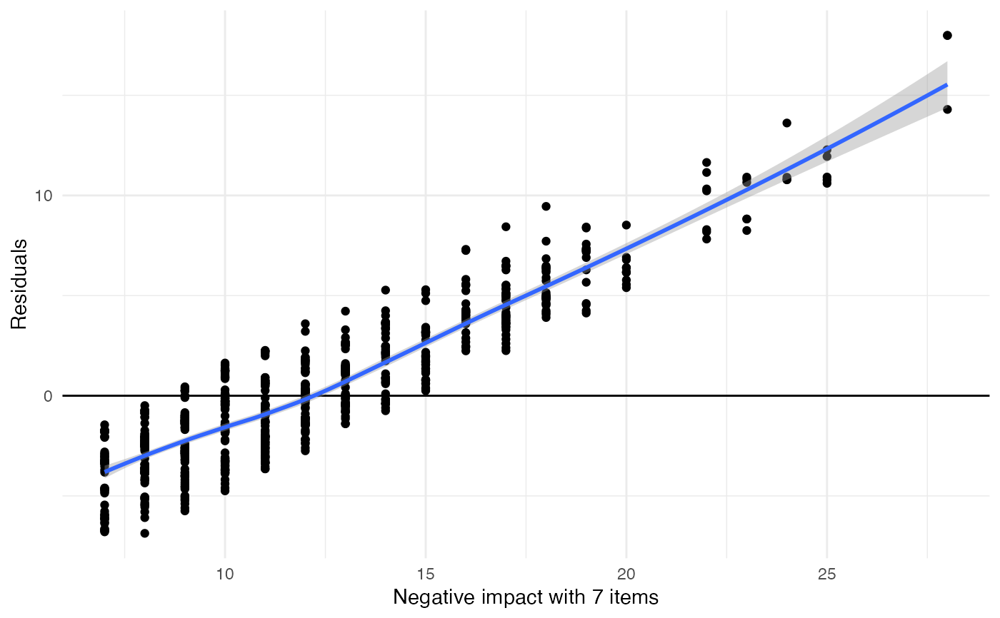
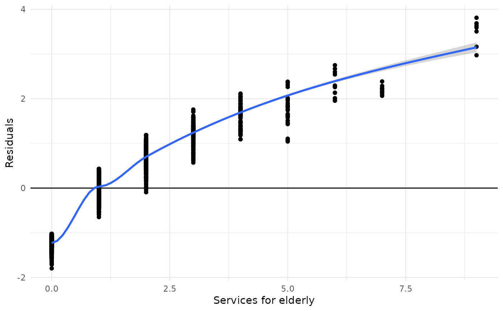

This function plots the aggregated residuals of k-fold cross-validated models against the outcome. This allows to evaluate how the model performs according over- or underestimation of the outcome.
plot_kfold_cv(data, formula, k = 5, fit)A data frame, used to split the data into k training-test-pairs.
A model formula, used to fit linear models (lm)
over all k training data sets. Use fit to specify a
fitted model (also other models than linear models), which will be used
to compute cross validation. If fit is not missing, formula
will be ignored.
Number of folds.
Model object, which will be used to compute cross validation. If
fit is not missing, formula will be ignored. Currently,
only linear, poisson and negative binomial regression models are supported.
This function, first, generates k cross-validated test-training
pairs and
fits the same model, specified in the formula- or fit-
argument, over all training data sets.
Then, the test data is used to predict the outcome from all
models that have been fit on the training data, and the residuals
from all test data is plotted against the observed values (outcome)
from the test data (note: for poisson or negative binomial models, the
deviance residuals are calculated). This plot can be used to validate the model
and see, whether it over- (residuals > 0) or underestimates
(residuals < 0) the model's outcome.
Currently, only linear, poisson and negative binomial regression models are supported.
data(efc)
plot_kfold_cv(efc, neg_c_7 ~ e42dep + c172code + c12hour)
#> `geom_smooth()` using formula 'y ~ x'
#> Warning: Removed 88 rows containing non-finite values (stat_smooth).
#> Warning: Removed 88 rows containing missing values (geom_point).

plot_kfold_cv(mtcars, mpg ~.)
#> `geom_smooth()` using formula 'y ~ x'

# for poisson models. need to fit a model and use 'fit'-argument
fit <- glm(tot_sc_e ~ neg_c_7 + c172code, data = efc, family = poisson)
plot_kfold_cv(efc, fit = fit)
#> `geom_smooth()` using formula 'y ~ x'
#> Warning: pseudoinverse used at -0.045
#> Warning: neighborhood radius 1.045
#> Warning: reciprocal condition number 1.9771e-28
#> Warning: There are other near singularities as well. 1
#> Warning: pseudoinverse used at -0.045
#> Warning: neighborhood radius 1.045
#> Warning: reciprocal condition number 1.9771e-28
#> Warning: There are other near singularities as well. 1

# and for negative binomial models
fit <- MASS::glm.nb(tot_sc_e ~ neg_c_7 + c172code, data = efc)
plot_kfold_cv(efc, fit = fit)
#> `geom_smooth()` using formula 'y ~ x'
#> Warning: pseudoinverse used at -0.045
#> Warning: neighborhood radius 1.045
#> Warning: reciprocal condition number 0
#> Warning: There are other near singularities as well. 1
#> Warning: pseudoinverse used at -0.045
#> Warning: neighborhood radius 1.045
#> Warning: reciprocal condition number 0
#> Warning: There are other near singularities as well. 1
